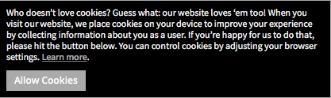

General Data Protection Regulation (GDPR) is a piece of data protection and privacy law that was put into effect in May 2018. GDPR could impact digital projects in a number of ways.[6]
“Any information relating to an identifiable person who can be directly or indirectly identified in particular by reference to an identifier. This definition provides for a range of personal identifiers including name, identification number, location data, or an online identifier.” – The Information Commissioner’s Office [7]
GDPR will require consent to have clear opt-in tick boxes, (pre-ticked boxes are no longer accepted). Digital projects will only be able to process the data they really need, requiring legal justification for why the personal data they’ve collected is being processed [7] (see image example) Individuals must be given as much detail as possible on what their data is going to be used for.
Deigned, Written and Developed by Ashley Edge [June 2020]